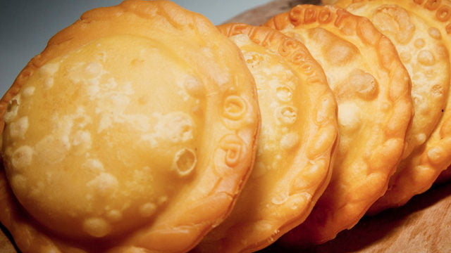

Pastelitos Recipe

A Dominican pastry, often served as an appetizer at home get togethers.
Pastelitos are a very common starter made to treat guests before a dinner,
especially for the holidays. The usual filling they come with is ground beef,
usually seasoned and prepared with typical Dominican seasonings. Nevertheless,
you can add as a filling anything you prefer.
Ingredients
- 2 egg (medium), eggs and whites separated
- 2 tablespoons vegetable oil
- 1 teaspoon salt
- 1½ teaspoons baking powder
- 2 cups all-purpose flour, plus extra for working the dough
- meat of any kind (usually beef or chicken) for filling
Steps
- Combine dough ingredients
- Form the dough
- Make disks
- Assemble 1 disk over another, with filling inbetween
- Deep fry pastelitos